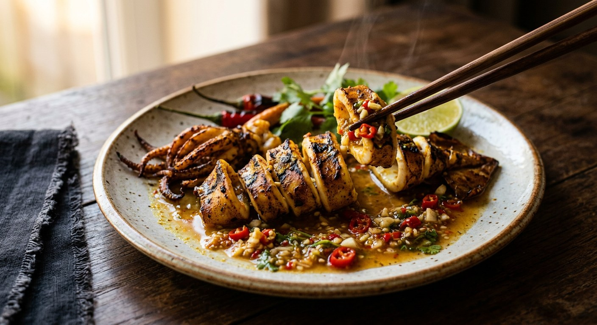

Skewered squid browning over charcoal, yellowed with a turmeric dip and crisped in lime water, sliced over a pounded nam jim seafood — the smell of every Thai night market.

ปลาหมึกย่าง is the street food with no fixed address: a cart, a brazier, skewers of squid turning over low charcoal in every night market, temple fair and school gate in the country. Wongnai answers the question every first-timer asks — why is the squid yellow? Because of the turmeric in the marinade, which colours it and gives the aroma the stall's regulars recognise from a distance.
The treatment is a short three-step build. The squid is scrubbed in salt water to pull off the slime and the fishiness, then dipped in turmeric and dark soy for fifteen minutes, then given the step that makes or breaks the texture: a soak in น้ำปูนใส, lime water, for another fifteen minutes to crisp the flesh before it meets the coals. TrueID's street-vendor exposé does it differently — no lime at all: the squid is massaged with coarse salt until the flesh firms up under your hands, rinsed, and soaked in ice water before it's skewered and packed on ice.
And the grill is only half the dish. The other half is the น้ำจิ้มซีฟู้ด, the pounded seafood dip — coriander root, garlic, chillies, palm sugar, fish sauce and lime. Kapook's round-up of nine dipping sauces for grilled squid shows it is a genre of its own: the classic pounded one, a peanut-brittle version, a syrup-and-holy-basil version. The squid is the carrier; the sauce is the argument.
| Thai | English | Amount |
|---|---|---|
| ปลาหมึกกระดอง | Cuttlefish | 1.2 kg |
| เกลือ (สำหรับล้าง) | Salt, for washing | 2 handfuls per 1 kg squid |
| ซีอิ๊วดำ | Dark soy sauce | 1 tbsp |
| ผงขมิ้น | Turmeric powder | ½ tsp |
| น้ำปูนใส | Lime water | 1 cup |
| กระเทียมสับ | Garlic, chopped | 2 tbsp |
| รากผักชี | Coriander roots | 5 (small) |
| พริกแดงจินดาซอย | Red jinda chillies, sliced | 20 |
| น้ำตาลปี๊บ | Palm sugar | ½ tbsp |
| เกลือ | Salt | ½ tbsp |
| น้ำปลา | Fish sauce | 1 tbsp |
| น้ำมะนาว | Lime juice | 3 tbsp |
| น้ำต้มสุก | Boiled water | to loosen the sauce |
The vendor batch (TrueID, สูตรลับทำขาย): 10 kg of squid massaged with 1 แกง cup of coarse salt until the flesh firms, rinsed, soaked in ice water, skewered and packed on ice; the yellow is a dip water of plain water, dark soy and turmeric. The colouring shortcut (TrueID, สุดแซ่บซี๊ด): food colouring in the dip water instead of turmeric — the author admits it; turmeric at least adds aroma. The sauce range (Kapook): nine variants, from the classic pounded nam jim to peanut-brittle and syrup-and-holy-basil versions.
The crispness step. Wongnai soaks in น้ำปูนใส (lime water) for 15 minutes; TrueID's street recipe soaks in water mixed with ปูนขาว (slaked lime) for 15–20 minutes; TrueID's vendor exposé uses no lime at all — just the coarse-salt massage until the flesh firms, then an ice-water bath. Three routes to the same crunch.
The yellow. Wongnai marinates the squid in turmeric and dark soy before grilling; the TrueID vendor and street recipes dip it in turmeric water (or food colouring — the street recipe admits it) at the skewer stage. Turmeric gives aroma as well as colour; the colouring is purely cosmetic.
The sauce build. Wongnai pounds coriander root, garlic and red jinda chillies and loosens the dip with boiled water; TrueID's no-MSG version blends green bird's eye chillies with a much wetter ratio — 5½ tablespoons each of fish sauce and lime juice. Pounded stays chunky; blended goes smooth.
The squid. Wongnai specifies ปลาหมึกกระดอง, cuttlefish. The vendor page grills whatever came off the boat: ปลาหมึกยักษ์ (giant squid) necks sliced, and ปลาหมึกสาย tentacles. The recipe is the same; the cephalopod negotiates.
Heat. Wongnai says low heat throughout. TrueID's street recipe doesn't fix a temperature but fixes the failure mode: overcooked squid goes เหนียว — tough. Both agree the grill is short and patient.
This recipe is translated from the following Thai-language sources. Where they disagree, we've said so.
1. Wongnai — "แจกสูตรฟรี 'ปลาหมึกย่าง' เมนูอาหารทะเลรสแซ่บพร้อมน้ำจิ้มซีฟู้ดสูตรเด็ด" (the recipe used here) — wongnai.com
2. TrueID Food — "ปลาหมึกย่าง สูตรลับทำขายที่พ่อค้าแม่ค้า ไม่ยอมบอก" (the salt-massage and ice-water vendor method) — food.trueid.net
3. TrueID Food — "สูตรหมึกย่างรสเด็ด สุดแซ่บซี๊ด" (the slaked-lime soak and the colouring admission) — food.trueid.net
4. TrueID Food — "สูตรทำ น้ำจิ้มปลาหมึกย่าง น้ำจิ้มซีฟู้ด สีสวย อร่อยแซ่บ แบบไม่ใส่ผงชูรส" (the no-MSG blended sauce) — food.trueid.net
5. Kapook — "9 สูตรน้ำจิ้มปลาหมึกย่าง จับคู่เติมความจัดจ้านรับปาร์ตี้" (the nine-sauce range) — cooking.kapook.com